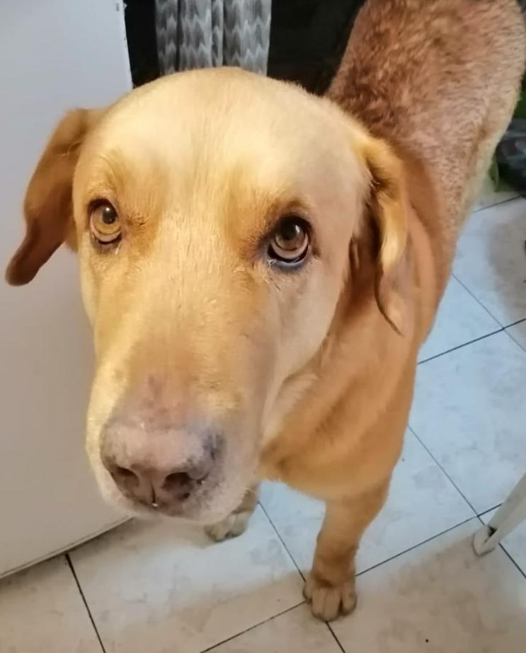

#01
SEBAS
Sebastian
- Ciudad
- Balvanera, CABA
- Edad
- 33 años
☕ Café primero, luego existo. Desarrollador y fan de los videojuegos, me engancha entender cómo encajan todas las piezas del desarrollo — front, back, testing — como si fuera un mismo track. Música de fondo, mate al lado, y a resolver lo que venga.
Skills
- HTML y CSS
- Javascript
- React
- SQL
Películas favoritas
- El Piso 13 (1999)
- Bastardos Sin Gloria (2009)
- La Familia del Futuro (2007)
Discos favoritos
- La Edad de la Cebra — Verde 70
- Que el Cielo Espere Sentao — Melendi
- Otro Dia en el Planeta Tierra — Intoxicados
Medidor de Hype
🥱
Afinando la guitarra...